SIG CITABRIA
SPARKS / 02 February 2021 /How to complete a model airplane kit
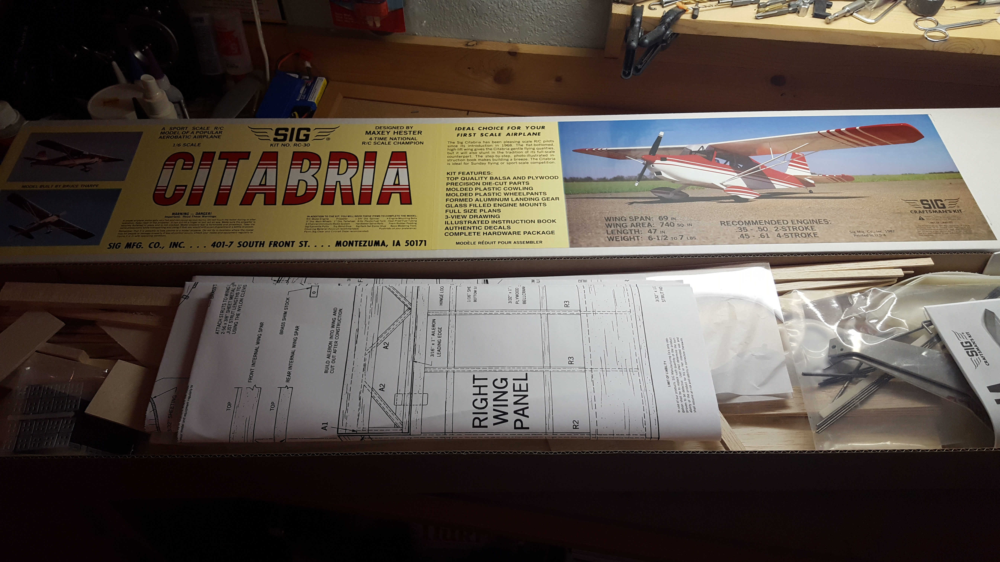 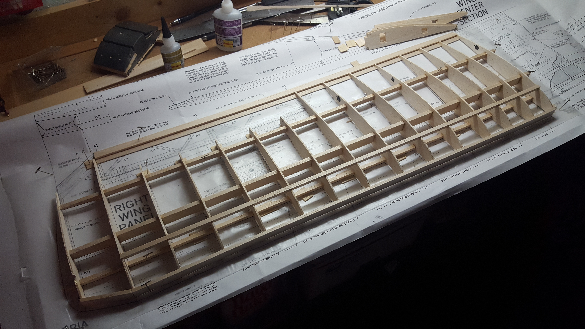 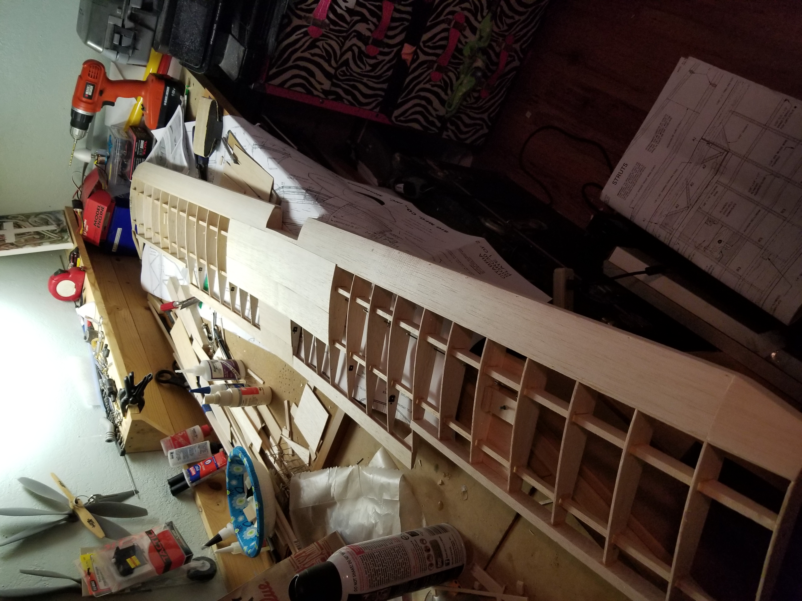 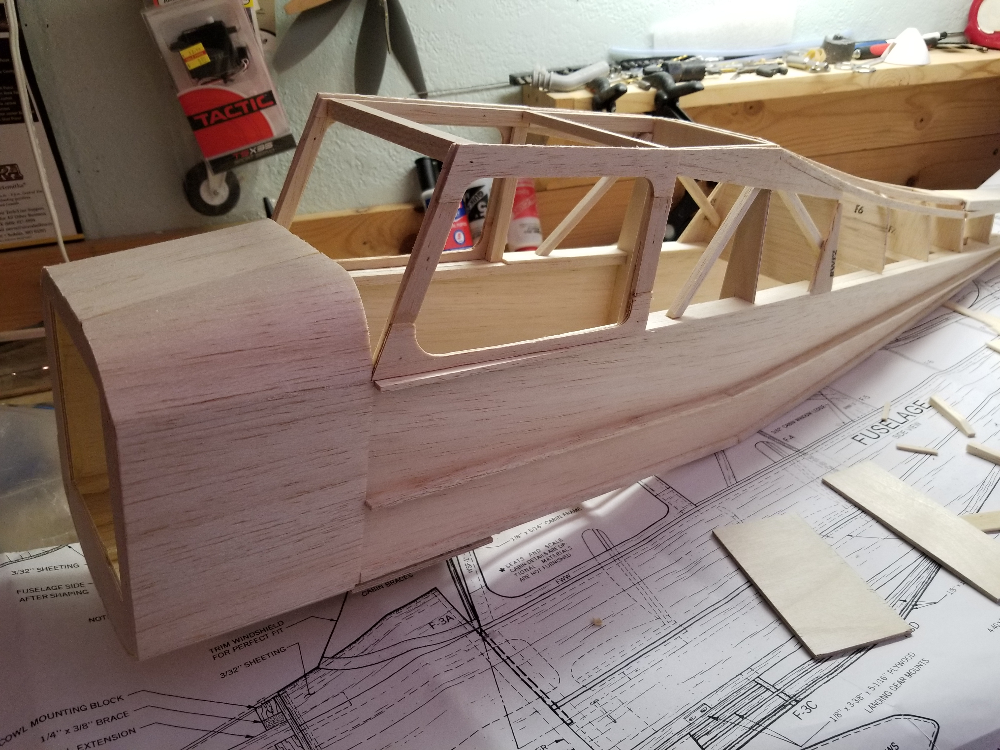 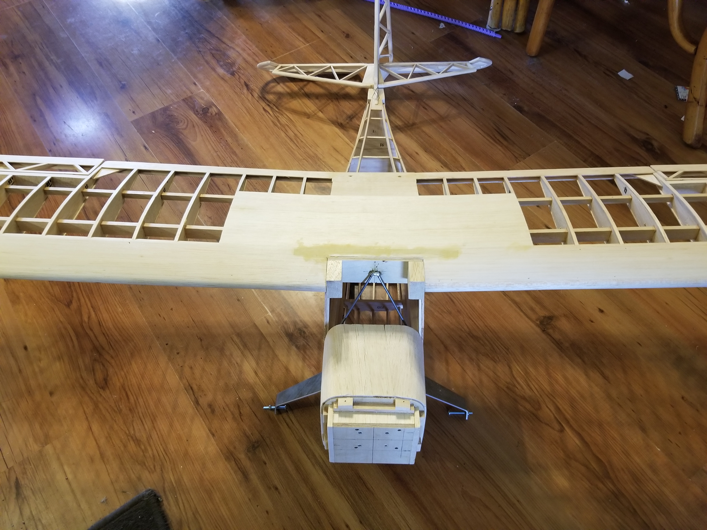In today’s world of getting things quickly, the R/C hobby is quickly losing the art, and reward of building a model from scratch or from a kit. Almost ready to fly (ARF) and Bind and fly (BNF) planes are being sold at an increasing pace; however, building from scratch instills a sense of pride, and ensures you will have a well-built aircraft that will stand the test of time. I have been building model aircraft for several years and have built many styles. Through these instructions, I’m going to show you how to build a plane properly, and select the right radio gear for the plane, as well as options for a power source. It’s not as hard as you may think, so let’s get started now!
The first thing you need do in any balsa aircraft build is make sure you have the correct tools before jumping in. Nothing is more frustrating than getting to a certain point and realizing that you don’t have the correct tool, or part that you need to continue. Open the kit box and look through the manual. Depending on the model you select, the instructions can be very detailed, or very vague, but in all of them you will have at least a parts list, a list of general tools, and a sheet diagram or parts blowup. You can also look over the plans for a general idea of what you’ll be getting into and sometimes, that can be very helpful. In general, you will need a good quality hobby knife and a set of different blades. These come in assortment packs that can be very helpful for different tasks during the build, but make sure you have several #11 blades, as these will be used most often. Furthermore, another helpful tool will be a razor saw for cutting bass wood and the plywood, if needed. In addition, I also recommend medium and thin Cyanoacrylate (CA) Glue, 5-minute epoxy (or longer), kicker for fast curing of the CA glue, wax paper, and T-pins.
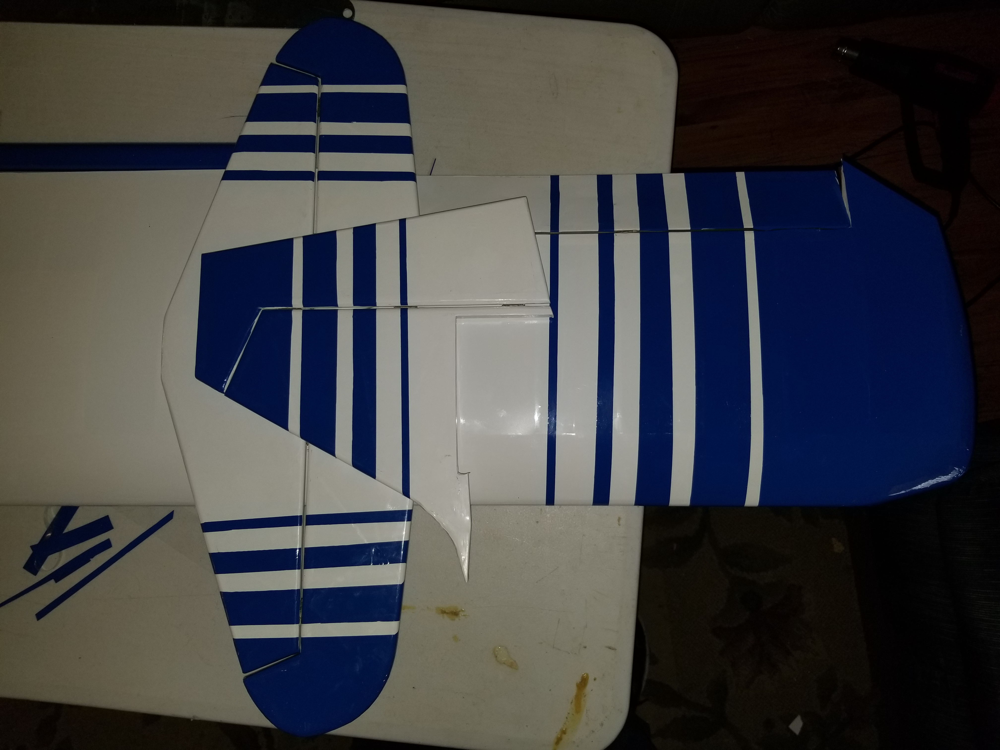 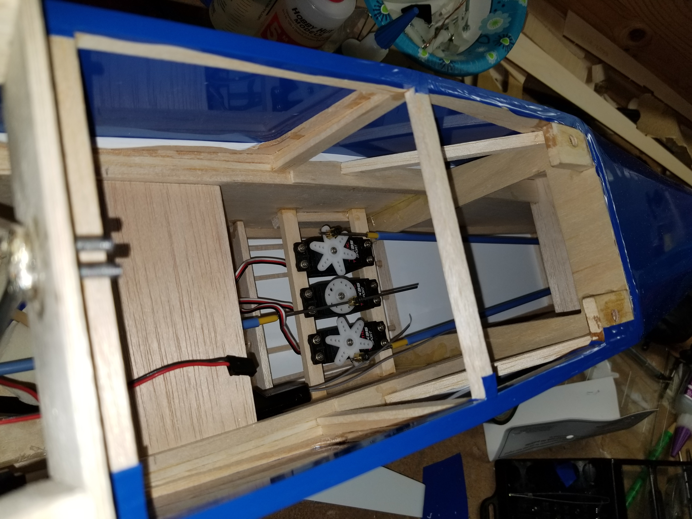 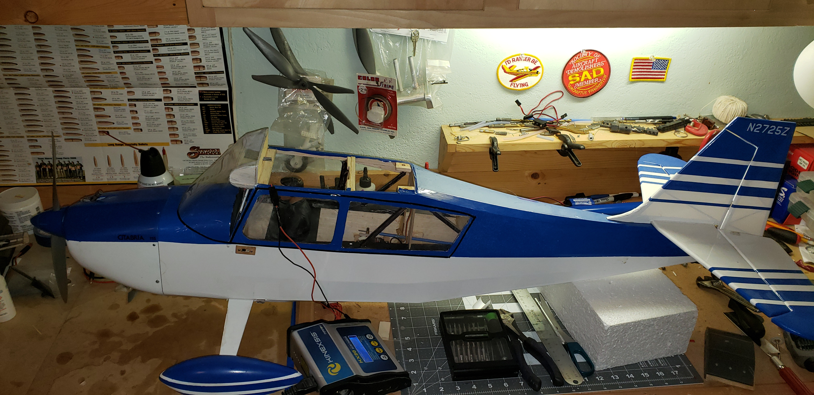
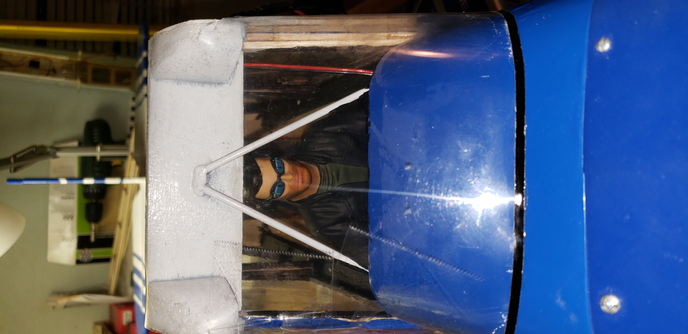
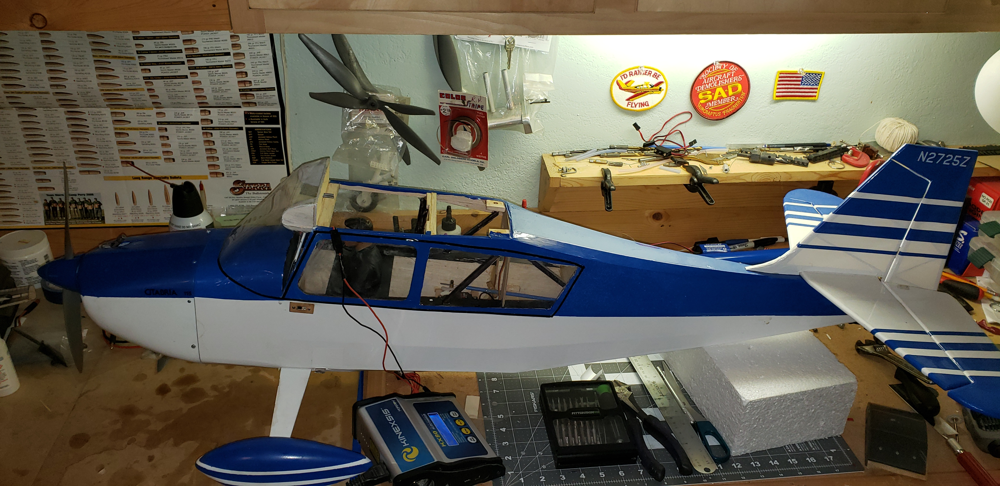
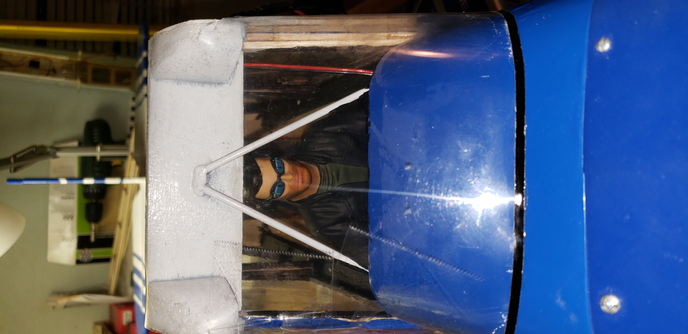
The next thing to make sure you have before starting is a sturdy work area. I use a work bench that is mounted on the wall, but whatever you use, make sure that the work area is at least the length of the wing you are working on. Even if the wing separates for transport or storage, you will assemble all the parts at one point to line everything up, and you don’t want to be doing this on the kitchen table or the floor. I have seen other builders use a door on saw horses, or plywood, but whatever you use make sure it is straight and true because if your build surface isn’t, your plane won’t be. Moreover, you need some cork tiles, insulating foam used in the construction industry, or something that you can easily stick, and remove, your T-pins to secure your build. Stainless steel and rare earth magnets are also a good choice to hold your parts together. After you have the build surface ready, open your kit and make sure you have all the parts. I like to lay them out in organized piles for the wing, the fuselage, and the tail sections. Refer to your manual and the plans to make sure everything is there before you begin. In addition, check that you have all the hardware that should be included.
The first two steps are very important to make sure you have a successful, fun build. Now we get to start working on the plane. With your work area clear of any debris, and your soft board under where you’ll be working, roll your plans out on the table. Lay the wax paper over the portion of the plan you will be working on and use the T-pins to secure everything down tightly. Now, follow the instructions on how to correctly assemble your particular model. In general, you’ll assemble the tail sections then the wing followed by the fuselage. Some kits will have you fit certain parts like the engine, pushrods, fuel tank, or radio equipment during the build. We’ll cover these things in the next few paragraphs. When all parts of the plane (wing, fuselage, tail etc...) have been built, the wood needs to be carefully sanded to a smooth finish, particularly the joints. Any unwanted holes and other imperfections can be filled with lightweight filler and then sanded to shape. For many, including myself, sanding is the most unpleasant part of the build, but it's worth taking the time because any lumps and bumps in the airframe will show through the covering and potentially spoil the look of the finished plane. It’s worth taking your time with the sanding and getting a nice finish. Use fine-grade sand papers such as 400, 600 and 800 grit for example.
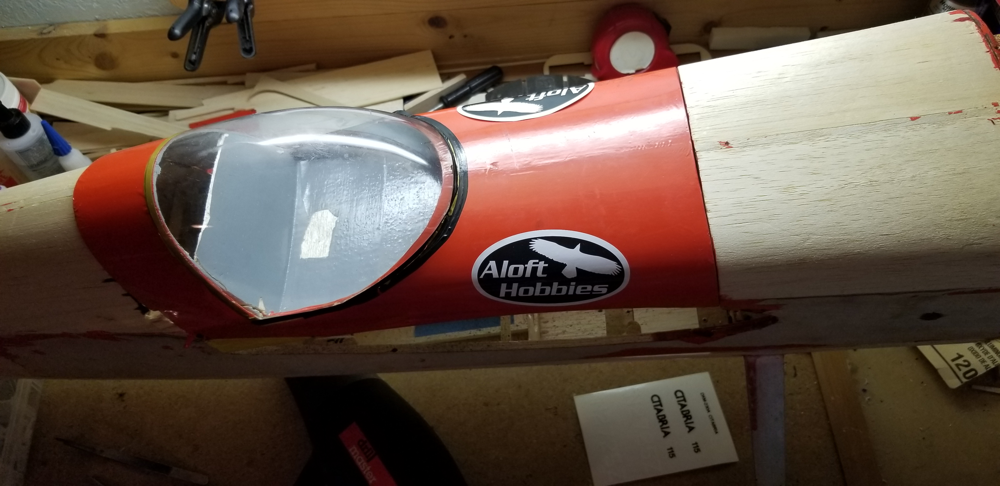 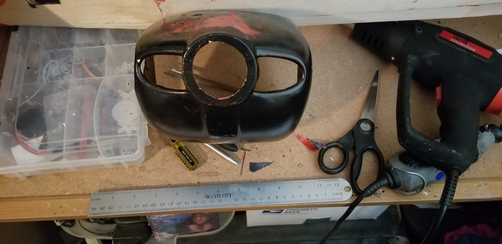 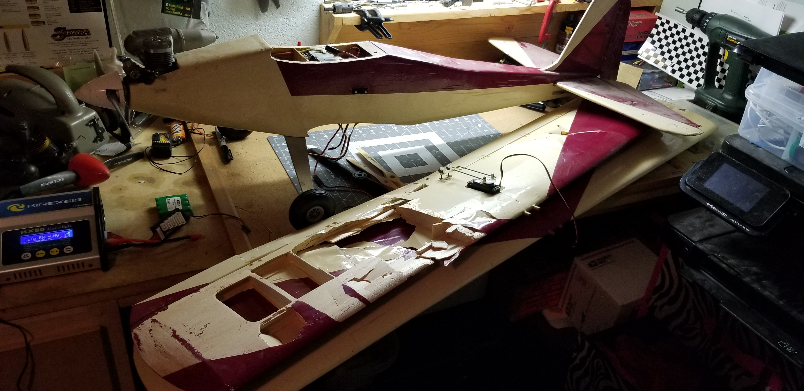 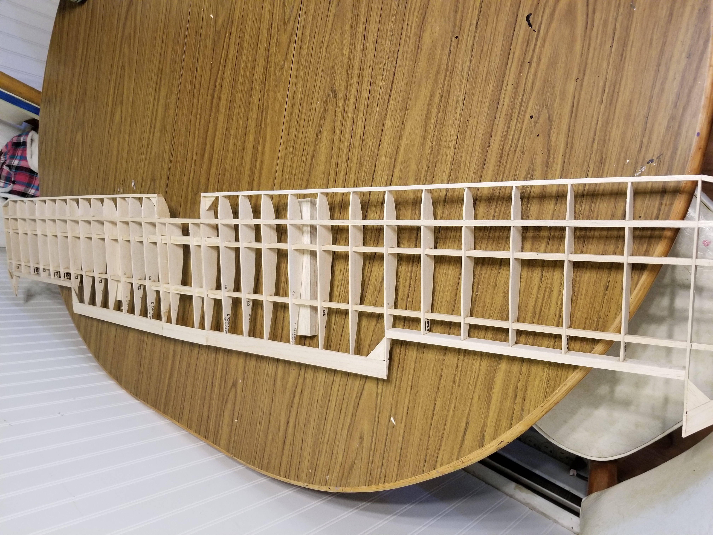 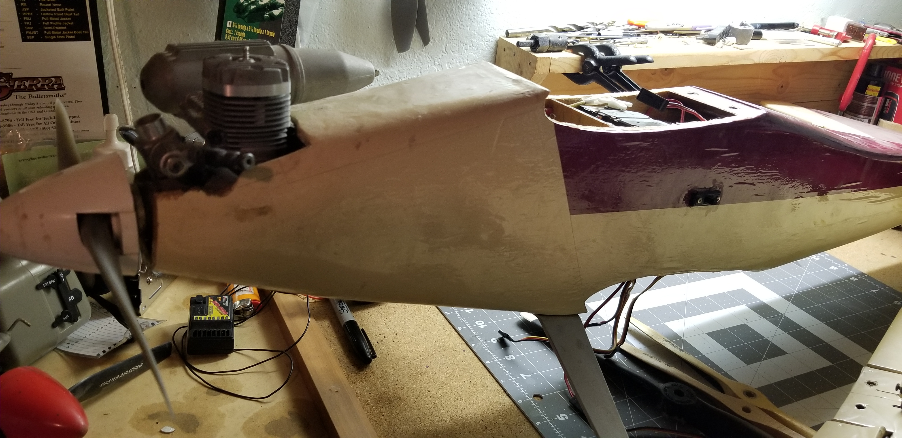With your model assembled and sanded, it’s time to get it covered! This is personally my favorite part because this will be when your plane starts to really look like a plane. There are several different types of covering to choose from like tissue or silk and “dope” that shrinks as it dries. The easiest and most modern way is to use a plastic film that you apply with an iron and shrink with a heat gun. It is made by several manufacturers, and comes in many different colors, and even comes in clear colors if you want to show off your woodwork.
Now that your plane is covered, it’s time to install radio equipment. The basic components of a typical radio control system are the transmitter, receiver and servos. Battery packs are needed to power all the components. However, receivers and servos of modern electric power (EP) r/c airplanes don't usually have their own battery pack because their power is taken directly from the motor battery pack through the electronic speed controller (ESC). There is an almost unlimited amount of choices, but while making this choice its wise not to skimp in this area. A common and reliable system that is introductory priced would be the Spektrum Dx6, Tactic ttx660, or Futaba 6J Systems. These are great 6 channel Transmitters that will get you started, and offers a couple extra channels to allow you to use dual aileron servos, flaps, lights or other features. However, when deciding on a receiver, it must match your radio brand. There are conversion kits to use different receivers, but the easiest and safest way is to keep it simple and go with the same brand.
In contrast, with Servos there are many choices as well, but the brand doesn’t have to match the radio. Let’s say you go with Tactic TX and RX you can, but don’t have to, go with a Tactic servo. You can use a Futaba servo just the same. I can’t stress enough the importance of getting the best for your budget, so do some research and check reviews and see what others think and how the reliability is. You don’t want to crash an airplane due to a faulty servo because you tried to save a couple dollars.
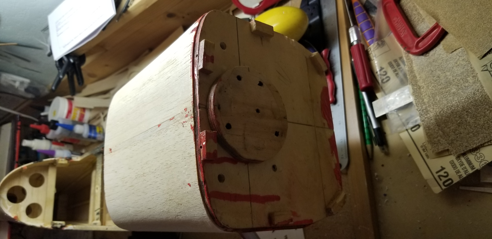 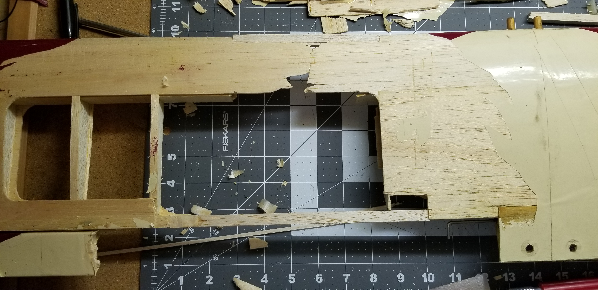 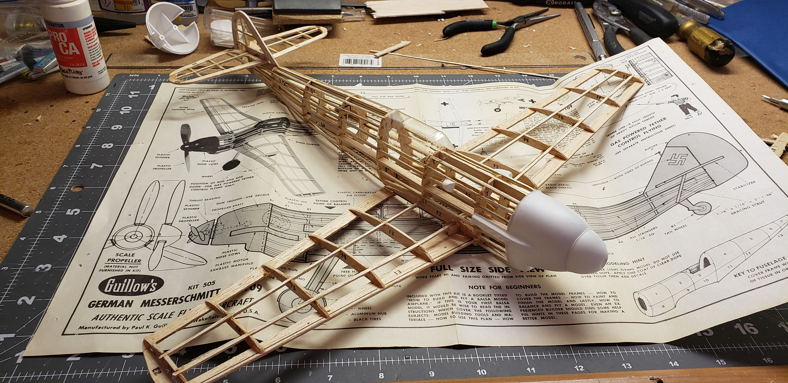Furthermore, you need to think about what engine you are going to use. You will need to choose glow, gas, or electric power. There are benefits to both. With glow or gas power, you have a scale motor that sounds good, and you don’t have to wait for batteries to charge, but you will have more maintenance like keeping the motor clean, glow plugs, and after every flying session you’ll have to clean the oil off your plane. However, with electric power your plane will always be clean; it’s quiet, and there is very little maintenance, but you will have to constantly charge batteries and carry a charger with you if you want to fly more after your batteries are discharged. There are many options either way you decide to go.
Lastly, you must balance your plane. Go to your local hobby shop and buy a balancer, pick one up online, or go to your local hardware store and get some pvc pipe and couplers to make your own. It needs to have a base and be about 18” tall. This will accommodate most fuselages. Look at your plans and your manual for proper balancing. Generally, it is at the main spar of the wing and forward about ¼ inch. This is one of the most important steps, in fact, if you get this wrong, your plane will be extremely unstable, if airworthy at all. A little nose heavy is ok, as it will make it more responsive; but if it’s tail heavy you will have an extremely hard time controlling it. These are the basic steps to complete any model, and I hope you will jump in and be a part of a hobby that’s been around since the 1930’s!
Back to Blog